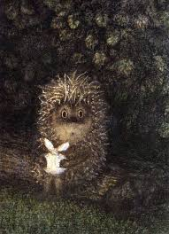

|  |
Ёжик в туманеCоветский мультипликационный фильм, снятый Юрием Норштейном в 1975 году на студии «Союзмультфильм». В основе произведения — одноимённая сказочная повесть Сергея Козлова, существенно переработанная во время написания сценария. Исследователи отмечают, что на стилистику фильма оказали влияние культурные традиции разных стран и народов (в том числе театр и живопись Востока, произведения Пауля Клее, Андрея Рублёва, Юрия Васнецова) |
| Роль | Имя |
|---|---|
| Автор сценария | Сергей Козлов |
| Художник-постановщик | Франческа Ярбусова |
| Оператор | Александр Жуковский |
| Композитор | Михаил Меерович |
| Звукооператор | Борис Фильчиков |
| Редактор | Наталья Абрамова |
| Монтажёр | Надежда Трещёва |
| Роли озвучивали | Вячеслав Невинный, Мария Виноградова, Алексей Баталов |
| Режиссёр и мультипликатор | Юрий Норштейн |